| << | 8 | >> |
การวิเคราะห์หลักทรัพย์โดยวิธีทางเทคนิคสโตแคสติก (Stochastic)
สโตแคสติกส์ STOCHASTICS
STOCHASTICS คือ ดัชนีวัดการแกว่งตัวของราคาที่ศึกษาความสัมพันธ์
การเคลื่อนไหวของราคาในช่วงเวลาหนึ่ง ๆ กับราคาปิด โดยมาจากข้อสังเกตที่ว่า ถ้าการสูงขึ้นของราคาหุ้นนั้นมีแนวโน้มสูงขึ้นต่อไป
ราคาปิดของหุ้นนั้นจะอยู่ใกล้กับราคาสูงสุด แต่ถ้าราคาของหุ้นมีแนวโน้มลดต่ำลง
ราคาปิดจะอยู่ในระดับเดียวกับราคาต่ำสุดของวัน
ถ้าราคาหุ้นกำลังจะเปลี่ยนทิศทางจาก ขึ้น เป็น
ลง เรามักจะพบว่าราคาในระหว่างชั่วโมงการซื้อขายอาจจะสูงขึ้น
แต่ราคาปิดจะอยู่ใกล้เคียงกับราคาต่ำสุดของวัน แต่หากราคาหุ้นกำลังจะเปลี่ยนทิศทางจาก
ลง เป็น ขึ้น ราคาปิดจะมีราคาใกล้เคียงกับราคาสูงสุดของวัน
แม้ว่าในระหว่างชั่วโมงซื้อขายราคาอาจจะลดต่ำลง
ความสัมพันธ์ระหว่างราคาสูงสุด-ต่ำสุดกับราคาปิด ได้ถูกนำมาพัฒนาเป็นสูตรสมการในการดูแนวโน้มขึ้น
หรือลงของราคาหุ้นในช่วงสั้น ๆ โดยนำมาใช้ดูว่า ราคาปิดอยู่ที่ระดับกี่เปอร์เซ็นต์ของช่วงราคาที่ซื้อขายในช่วงระยะเวลาหนึ่ง
หลักการเบื้องต้นในการคำนวณ STOCHASTICS
เครื่องมือ STOCHASTICS ประกอบด้วย
เส้น %K เป็นเส้น STOCHASTICS
เส้น %D เป็นเส้นค่าเฉลี่ยของเส้น %K
%K = ราคาปิด (วันนี้) - ราคาต่ำสุด (ในช่วง n วัน)
/ ราคาสูงสุด (ในช่วง n วัน) - ราคาต่ำสุด (ในช่วง n วัน)
%D = ค่าเฉลี่ย (n วัน) ของค่า %K
หลักการอ่าน STOCHASTICS
สัญญาณเตือน ซื้อ
เกิดขึ้นเมื่อเส้น STOCHASTICS เข้าเขต OVERSOLD ที่บริเวณระดับต่ำกว่า 20% และควรซื้อเมื่อเกิดสัญญาณ
ซื้อ จากการที่เส้น %K ตัดเส้น %D ขึ้น
สัญญาณเตือน ขาย
เกิดขึ้นเมื่อเส้น STOCHASTICS เข้าเขต OVERBOUGHT ที่บริเวณระดับสูงกว่า 80% และควรขายเมื่อเกิดสัญญาณ
ขาย จากการที่เส้น %K ตัดเส้น %D ลง
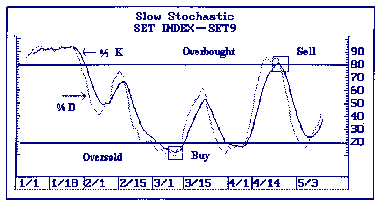 |
รูปแบบของการตัดขึ้นตัดลง
สัญญาณซื้อหรือขายจากการตัดขึ้นหรือลงในทางปฏิบัติ มักจะมีบางกรณีเกิดเป็นสัญญาณหลอกขึ้นซึ่งอาจทำให้ผู้ลงทุนเสียหาย
จึงมีกฎเกณฑ์เพิ่มเติมในการอ่านรูปแบบของการตัดขึ้นหรือลง โดยจะดูว่ารูปแบบในลักษณะใดที่จะผลักดันให้ราคาหุ้นขึ้นหรือลงอย่างรวดเร็ว
การตัดค่อนไปทางขวามือ (RIGHT-HAND CROSS-OVER)
เนื่องจากเส้น %K เปลี่ยนทิศทางเร็วกว่าเส้น %D โดยจะวิ่งขึ้นหรือลงก่อน และอาจทำให้เกิดสัญญาณหลอก
ดังนั้นสัญญาณที่ดีกว่าคือ การให้ทั้ง 2 เส้นเคลื่อนไปในทิศทางเดียวกัน ในกรณีเช่นนี้
รูปแบบจะออกมาในลักษณะที่เส้น %K ตัดเส้น %D ค่อนไปทางขวามือ (RIGHT-HAND CROSS-OVER)
ซึ่งเป็นสัญญาณที่ชัดเจนกว่า
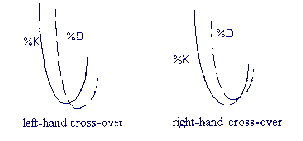 |
รูปแบบ HINGE
เป็นรูปแบบการชะลอการขึ้นหรือลงในลักษณะอ่อนตัวลง เป็นเครื่องชี้ว่าราคาหุ้นอาจจะมีการเปลี่ยนทิศทางในเร็ว
ๆ นี้
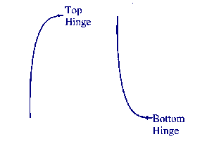 |
การแยกทางจากกันระหว่างแผนภูมิราคากับแผนภูมิ STOCHASTICS
(DIVERGENCE)
แบ่งออกเป็น 2 ลักษณะ
BEARISH DIVERGENCE คือการที่ราคาหุ้นสามารถสร้างจุดสูงใหม่
แต่ STOCHASTICS ไม่สามารถสร้างจุดสูงใหม่เป็นสัญญาณขาย
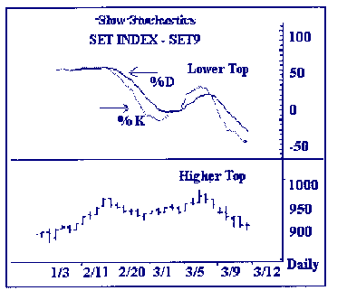 |
BULLISH DIVERGENCE คือการที่ราคาหุ้นสร้างจุดต่ำใหม่ที่ต่ำกว่าจุดต่ำเก่า
แต่ STOCHASTICS มีจุดต่ำใหม่ที่สูงกว่าจุดต่ำกว่า เป็นสัญญาณซื้อ
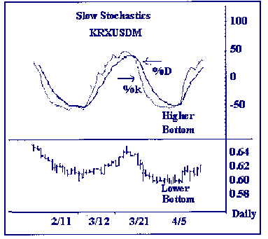 |
รูปแบบ SET-UP
จุดยอดใหม่ของ STOCHASTICS สูงกว่าจุดยอดเก่า ในขณะที่ราคาหุ้นไม่สามารถสร้างจุดสูงใหม่และกลับลดต่ำกว่าจุดสูงเก่าเป็นสัญญาณเตือนว่า
การลดต่ำลงของราคาหุ้นไม่น่าจะรุนแรงมากกว่านี้เรียกว่า BULL SET-UP และมีโอกาสที่ราคาหุ้นจะดีดตัวกลับสูงขึ้น
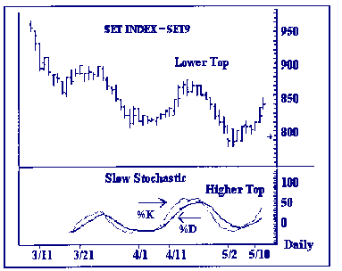 |
BEAR SET-UP จุดต่ำใหม่ของ STOCHASTICS ต่ำกว่าจุดต่ำกว่าในขณะที่ราคาหุ้นมีจุดต่ำใหม่สูงกว่าจุดต่ำเก่า
เป็นสัญญาณเตือนว่า การขึ้นของราคาหุ้นครั้งนี้จะเป็นการขึ้นก่อนที่ราคาจะต่ำลง
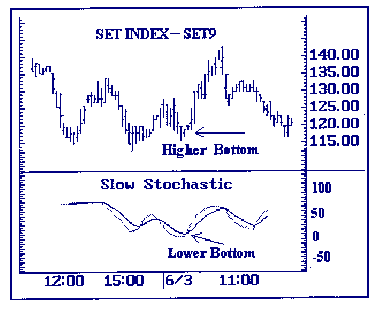 |
รูปแบบ FAILURE
แบ่งเป็น 2 ลักษณะคือ
รูปแบบ KNEE เส้น %K ตัดเส้น%D
ขึ้นและถอยกลับแต่ไม่ทะลุผ่านเป็นสัญญาณเตือนว่า ราคาหุ้นยังสามารถที่จะเคลื่อนตัวสูงขึ้นต่อไปได้
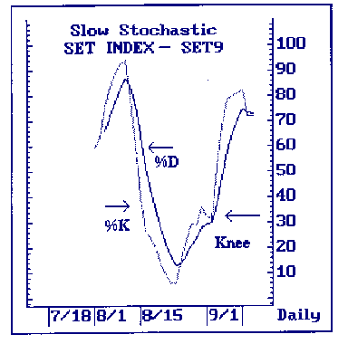 |
รูปแบบ SHOULDER เส้น %K ตัดเส้น %D และดีดตัวสะท้อนกลับแต่ไม่สามารถตัดผ่านไปได้เป็นสัญญาณเตือนว่าราคาหุ้นใกล้จะอ่อนตัวลง
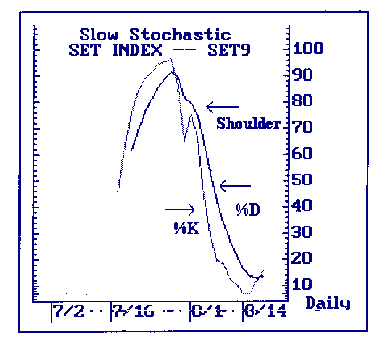 |
รูปแบบ GARBAGE
แบ่งออกเป็น 2 ลักษณะ
GARBAGE TOP เป็นรูปแบบทีเส้น %K ตัดเส้น %D ขึ้น
ๆ ลง ๆ อยู่บริเวณเขตภาวะซื้อมากไป รูปแบบนี้จะเกิดขึ้นกับสภาพตลาดที่อยู่ในภาวะขาขึ้น
ซึ่งจะใช้ระยะเวลาหนึ่ง หลังจากนั้นจะมีการปรับตัวลง ลักษณะการปรับตัวลงของ STOCHASTIC
จะเป็นไปอย่างรวดเร็ว และจะสามารถดีดตัวกลับสูงข้นได้ทันที โดยมีลักษณะที่คล้ายคลึงกับตัว
V จึงเรียกอีกอย่างหนึ่งว่า SPIKE BOTTOM
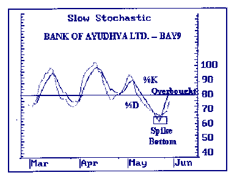 |
GARBAGE BOTTOM เกิดขึ้นในสภาพตลาดขาลง และมีความหมายตรงกันข้ามกับ
GARBAGE TOP โดยรูปแบบการปรับตัวสูงขึ้นของ STOCHASTIC จะเป็นไปในลักษณะ SPIKE
TOP
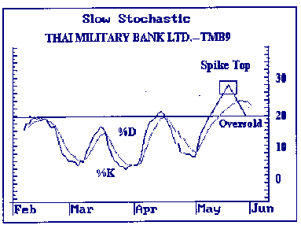 |
ความหมายของระดับ 0% และ 100%
ระดับ 0% หมายถึงระดับที่บอกภาวะขายมากไป (OVERSOLD) ของหุ้นแต่
ณ ระดับนี้ไม่ได้หมายความว่าราคาหุ้นจะลดลงต่ำกว่านี้อีกไม่ได้ เพียงแต่แต่บอกว่า
ณ ระดับนี้ราคาหุ้นอาจหยุดพักชั่วคราว หรืออาจดีดตัวสูงขึ้นเล็กน้อย ในลักษณะของ
TECHNICAL REBOUND ก่อนที่ราคาจะตกลงต่อระดับ 0% จึงอาจตีความได้ว่าราคาหุ้นได้ลดลงมาถึงระดับ
WEAK
ระดับ 100 % หมายถึงระดับที่บอกภาวะซื้อมากไป (OVERBOUGHT) ของหุ้น
แต่ ณ ระดับนี้ก็ไม่ได้หมายความว่าราคาหุ้นจะไม่สามารถวิ่งขึ้นสูงต่อไปได้
แต่กลับชี้ให้เห็นว่าหุ้นมีความแข็งแรง (STRONG) จน สามารถผลักดันให้เส้น STOCHASTIC
ขึ้นมาอยู่ที่ระดับ 100% ได้ อย่างไรก็ดี ณ ระดับราคานี้ STOCHASTIC อาจมีการปรับตัวลงมาบ้าง
(TECHNICAL CORRECTION) แต่เป็นการปรับตัวเพื่อลดภาวะ OVERBOUGHT มากกว่า
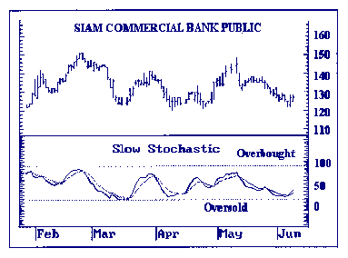 |
| << | 8 | >> |